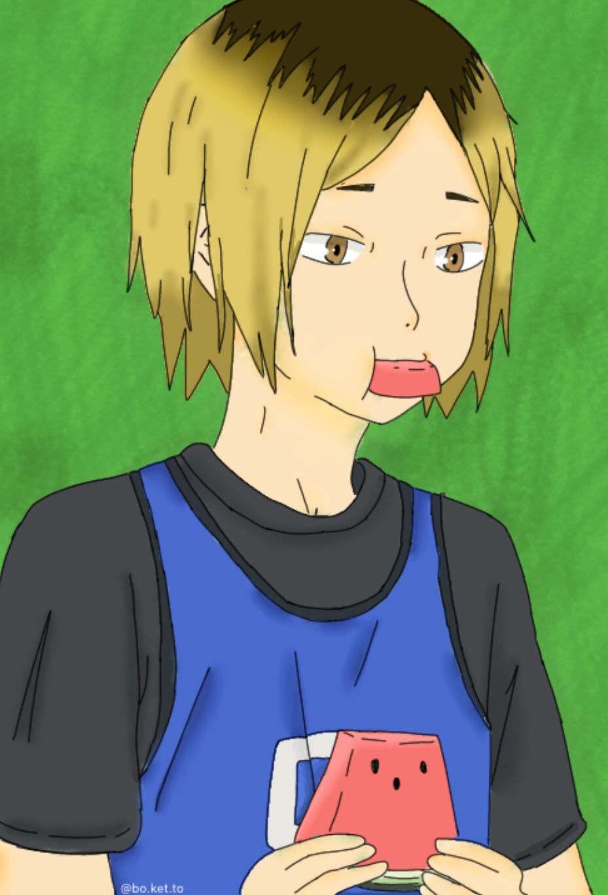

Why YOU should believe in Kenma supremacy
Top ten reasons to argue why Kenma is best boy.

Why Studio Ghibli films feel so nostalgic
Hayao Miyazaki has left an imprint on Studio Ghibli as it's star director. All of his films always have a profound feeling and simple element to it that we all relate to: why?